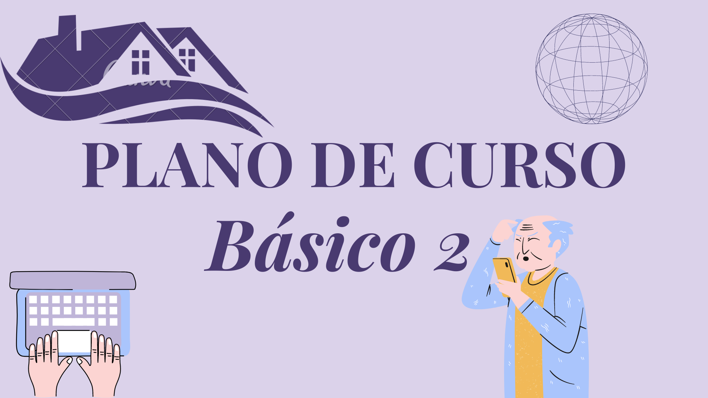

R$:199,00
No Básico 1 disponibilizaremos o curso de aplicativos básicos, incluindo as redes sociais, Whatzapp, Instagram e Facebook. Um curso voltado para sua comunicação e interação com amigos e familiares. Além de jogos para a diversão e estímulos da mente.
Ensinaremos também como utilizar todas as ferramentas que o Google disponibiliza, uma ferramente necessária no nosso dia-a-dia.
Atendemos exclusivamente a domicílio e online, para assim ofertar uma melhor comodidade para você cliente.
Este curso terá um total de 30 horas, ficando a critério do cliente escolher os melhores dias e horários para realização do mesmo. Você cliente terá o prazo de 60 dias para usufruir do pacote. Caso haja a necessidade pode-se contratar um novo pacote.

R$:250,99
No Básico 2 disponibilizamos todos os aplicativpos do Básico 1, e mais três aplicativos da sua escolha como: aplicativo do banco (para ter maior acesso em suas contas e ter controle do seu dinheiro), aplicativo no INSS (para facilitar o se dia-a-dia, neste momemnto pandêmico, você não precisará sair de casa, tendo sua autonomia, para resolver tudo do aconchego de seu lar, e não será mais dependente de ninguem, controlando sua pensao ou aposnetadoria).
Atendemos exclusivamente a domicílio e online, para assim ofertar uma melhor comodidade para você cliente.
Este curso terá um total de 50 horas, ficando a critério do cliente escolher os melhores dias e horários para realização do mesmo. Você cliente terá o prazo de 100 dias para usufruir do pacote. Caso haja a necessidade pode-se contratar um novo pacote.